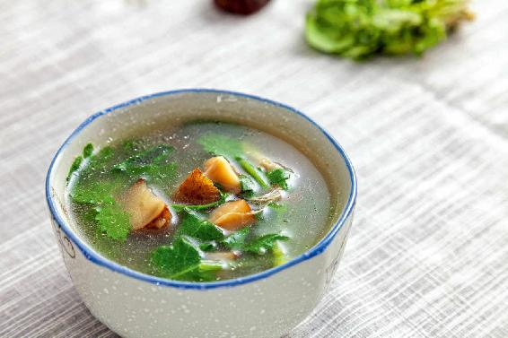
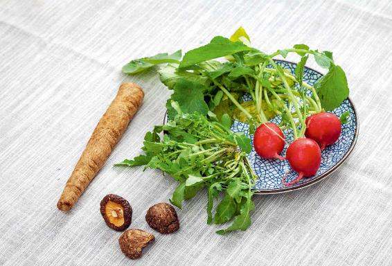
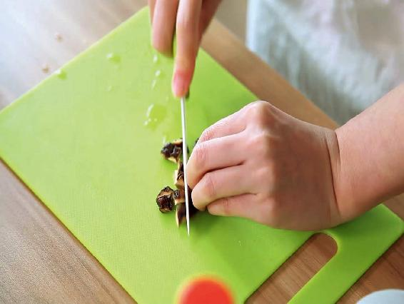
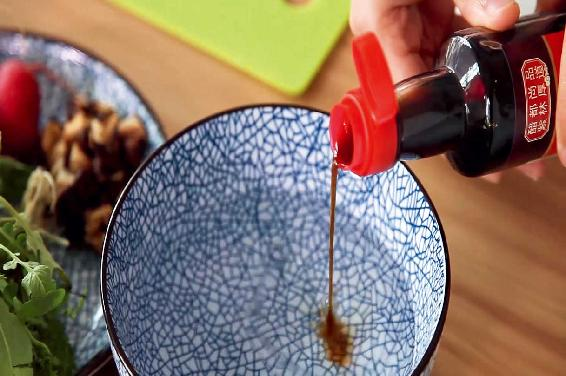
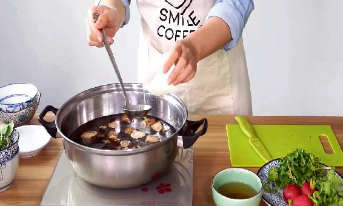
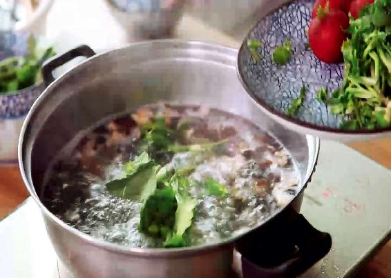
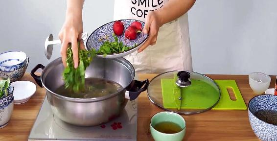
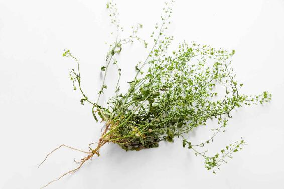

古人把春天流行的流感、肺炎等会引起发热的传染病都归类为“温病”。温病一旦严重起来，“温”就变成“瘟”，温病就会变成瘟疫。

防感护生汤

原料：鲜荠菜1把，萝卜缨1把，牛蒡半根，干香菇3个。
调料：油、盐、醋等。

做法：
1. 把干香菇洗净泡发，切成小块儿。
2. 牛蒡刷洗干净，不要去皮。刷洗干净之后，切成滚刀块。这样切出来的牛蒡，每一块都有两个切面，比较容易入味。

3. 把切好的牛蒡放入醋水中。

4. 锅里放入水，加一点点油和盐，以保护蔬菜的维生素不流失。

5. 把香菇和牛蒡放进锅里，煮开后，再把洗干净的萝卜缨放进去，煮上20分钟。

6. 放入荠菜，煮上1分钟，马上关火起锅。
允斌叮嘱：
1. 干香菇比鲜香菇抗病毒的效果要好一些，而且不容易生痰。
2. 如果您觉得牛蒡的表皮比较脏，可以用面粉水泡一泡，面粉水有表面活性剂的作 用，有助于去除牛蒡表面的脏东西及化肥和农药残留。
3. 牛蒡含有丰富的铁，非常容易氧化，切完之后如果放在菜板上，它一会儿就会变黑。最好是在切的时候，旁边放一碗醋水，随切随把切好的牛蒡放到醋水里面泡着，这样它的颜色就不会变。
4. 荠菜洗干净，切成2厘米长的小段，切的时候要连根一起切。荠菜根的效果很好，如果您觉得根太老，可以不吃它。如果用老荠菜，或者干荠菜，就整株放汤里煮，只喝汤，老荠菜不用吃。
5. 荠菜是不需要久煮的，它很容易熟，煮上1分钟，它的清香味就会散入汤内，味道最好。如果久煮，荠菜的风味就没有了，抗病毒的作用也会打折。
古人对春天的温病有一个很详细的阐述，它有两个因素，一个外因，一个内因。外因就是传染性的病毒，内因就是我们身体里的伏寒和火，还有免疫力较低。
同一种流感病毒，有的人会被传染，有的人就不会被传染，这是因为每个人的身体免疫力不同。
春天各种病毒活跃，提高人体免疫力成为当务之急。我给大家分享一个可以提高人体免疫力的食方，对预防春天的流感也有一定效果。
这道汤做好之后，我们不仅要喝汤，荠菜、牛蒡、香菇也要一起吃掉。如果您买回来的荠菜特别老，那就不要把它切成段了，扎成小捆，跟萝卜缨一起下锅煮，煮好之后把它们捞出来，直接喝汤就可以了。
读者评论：防感护生汤非常好喝
傻孩子的纸飞机：有一年过年正好遇上禽流感，当时我发热了，就用了老师的方子，第二天热退了。此后家人不舒服了就喝防感护生汤，感恩。
阿艳：防感护生汤非常好喝！孩子很喜欢，喝了很舒服，女儿喝了以后咳嗽有所改善，非常感谢老师！
晗涵：以前不认识荠菜，听老师说了荠菜这么多好处，今年挖了好多。防感护生汤真的好喝，可闺女不爱吃萝卜（没有萝卜缨，煮的带皮萝卜），其他人都说萝卜好吃，有荠菜味。现在我家煮面条都会往锅里放荠菜，那味道真叫一个香，沁人心脾！
允斌解惑：没有鲜牛蒡，用干牛蒡也可以
梅：老师，做防感护生汤没有鲜牛蒡，用干牛蒡可以吗？
允斌：可以。
防感护生汤是预防春季流行病的一道汤，可以提高人体的抗病毒能力，对春天的流感、麻疹这些流行病都有一定的预防作用。
如果在春天得了流感或者普通感冒，好了之后还留下一点点小尾巴，比如，咳嗽、咳黄痰、喉咙痛，小朋友还有一点便秘，等等，那您可以喝这道汤来进行调理。
有些人流感或感冒好了之后，会感觉身体好像没有完全恢复，肠胃一直有点不调，胃口不好，或是觉得自己口干舌燥……，这些都是流感病毒侵害身体的结果。此时需要彻底清除病毒，同时恢复脾胃的机能。
对于这些流感/感冒后遗症，也可以喝防感护生汤来善后。
有些朋友总是问我脾胃虚弱怎么调理，我觉得这不是三两句话就能讲清楚的，因为一年四季养脾胃的方法各有不同。
如果您想养脾胃，整个春天都适合喝这道防感护生汤。如果您喝了之后，觉得身体很舒服，可以每周都喝几次。
学生和经常外出的人，没有条件做汤，那至少要每天喝荠菜水和牛蒡茶。
防感护生汤里的荠菜、牛蒡，对有些朋友来说是家常菜，家里厨房经常准备着，但对另一些朋友来说，可能平时很少吃它们，觉得很陌生，不知道上哪里去买，很纠结。
其实，防感护生汤是应对春天流行病暴发阶段所用的，如果您实在配不齐汤中所需的原料，可以从《陈允斌抗病毒应急食方》书里看看还有没有其他的抗病毒的汤。
大自然是很有意思的，一个地方生长出的菜，往往会对这个地方的流行病有调理作用。比如，2017年禽流感疫情，一开始集中暴发在南方，之后传入北方。禽流感暴发最严重的三个省是浙江、江苏和安徽。这几个地方牛蒡都很容易找到。荠菜就更不用说了，在南方的初春遍地都是，雨水节气之后，可能都比较老了，但老荠菜药效更好。
等到惊蛰节气时，北方的荠菜也慢慢长出来了，北方一些地方把它称为荠荠菜、白花菜。荠菜在全国到处都有，并不是南方专有的蔬菜，在一些地方它只是换了一个名字而已。
如果您实在买不到荠菜或牛蒡，不用着急，可以喝接下来惊蛰节气的抗病毒汤。如果您确实很想喝这道汤怎么办呢？可以网购，非常方便。
荠菜是有不同品种的，如果网购的话，可以挑好的品种。
按大小来区分是最简单的方法。叶子越小的荠菜越好吃，小叶荠菜的叶片一般都很薄，叶子上有很深的羽状裂纹，看起来像羽毛一样，它上市的时间比大叶荠菜上市时间要晚一些。
还有一种小叶荠菜，它的羽状分裂的叶子特别细，这种叫作沙荠，味道是最鲜美的。

大叶荠菜叶片比较厚，生长速度很快。在早春季节，菜市场上出现的都是这种大叶的荠菜。
不论是哪种荠菜，它们的功效都大同小异。荠菜也分头茬和二茬，最好是吃初春时刚生苗的荠菜，它经过一个冬天的营养累积，药性是最好的。到了夏天，药性相比早春的荠菜就要逊色多了。
牛蒡，有的朋友非常熟悉，有的朋友甚至从来都没有听说过。以前，牛蒡可能是一种只有在部分地区才可以吃到的蔬菜，但现在全国都可以买到了，网购也非常方便。
如果去市场选牛蒡，首先，您会发现它跟山药很像，也是长长的一根，但它比较光滑。其次，山药上有很多的须，牛蒡没有。
怎么挑选牛蒡呢？
抓住牛蒡粗的一头，把它横着拿起来，如果细的一头弯得比较厉害，说明牛蒡比较鲜嫩；如果细的一头不弯，还是直挺挺的，说明牛蒡已经老了，木质纤维化了，吃起来如同嚼木头一般。
什么样的人可以喝防感护生汤呢？其实，在整个春天，男女老少都可以喝。
一般来说，一周喝一次防感护生汤就可以了；但如果这个春天病毒十分活跃的话，您不妨一周多喝几次；如果是传染病暴发的地区，那您每天都要喝。
这道汤也很适合孕妇（怀孕三个月以后的孕妇）来喝。有的朋友问：“陈老师，我怀孕还不到三个月呢，能喝吗？”一般来说，怀孕三个月以内的孕妇，在身体健康的情况下，如果您平时经常吃荠菜、牛蒡这些蔬菜，怀孕后可以继续吃，喝防感护生汤也没有问题。如果您从来没有吃过这些蔬菜，怀孕三个月之内喝这道汤要谨慎一点。或者咨询一下医生，然后自己再决定喝不喝。
有些刚怀孕的女性可能会有各种意外情况的发生，或者是习惯性流产。如果发生了意外，需要查找原因，如果您在这段时间正好吃了一些平时没吃过的东西，那原因就比较复杂了，不太好排除。本来是很好的食物，就可能无辜“背锅”了。
其实，这道汤里的原料都是一些很常用的蔬菜，所以只要不是极个别特殊情况的人，一般的男女老少都不用太纠结，不妨尝试一下，只要您喝了以后觉得舒服，那您就可以在整个春天都喝它。